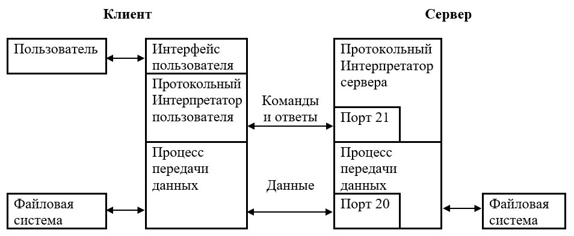
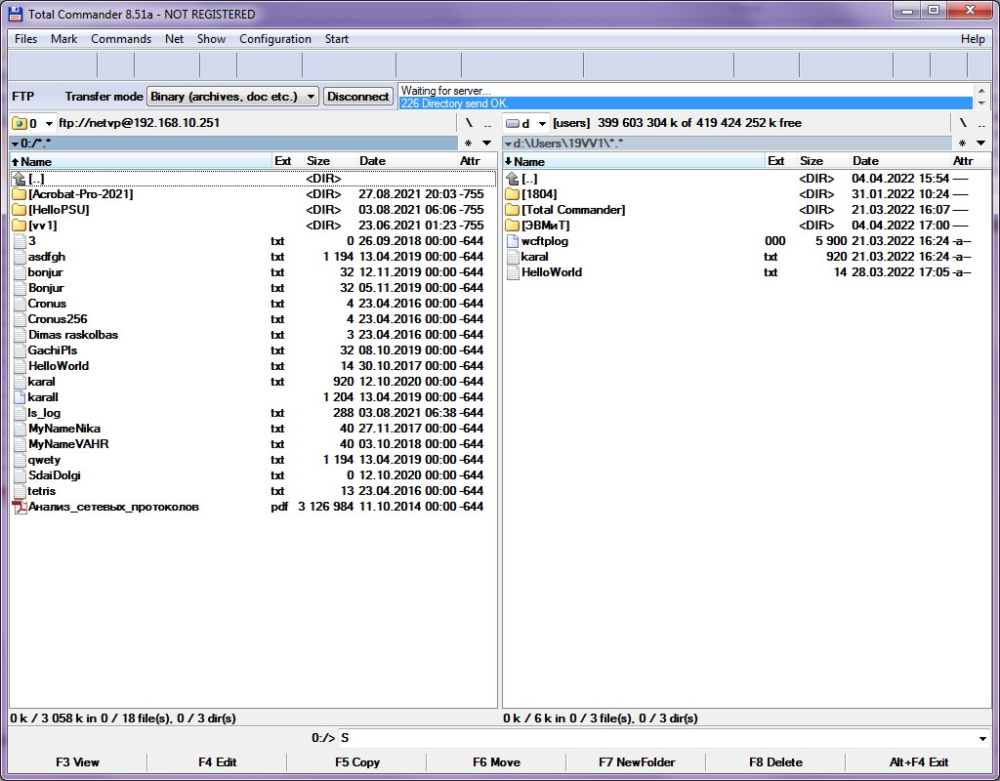
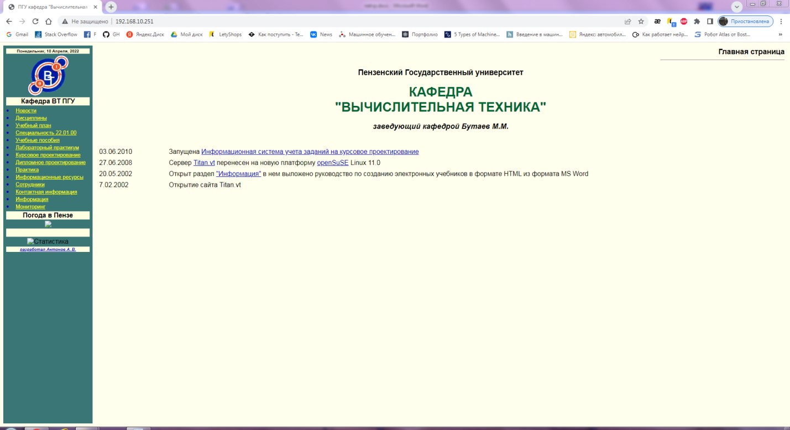

Изучение и анализ протоколов прикладного уровня с помощью диагностических утилит операционной системы Windows, программных средств, позволяющих контролировать сетевой трафик на примере программы Network Monitor и FTP-клиента Total Commander.
FTP (File Transfer Protocol) - протокол прикладного уровня модели TCP/IP передачи данных по сети, осуществляет доступ к удалённых директориям. В отличие от протокола HTTP, ему не нужен графический интерфейс, он представляет собой компьютер, к которому могут подключаться удалённые пользователи. Для связи, как правило, используется 21 порт.
FTP так же как и HTTP использует структуру запроса клиент-сервер: сначала запрос о подключении, запрос на взаимодействие с файлом на сервере и запрос о подключении. На каждый запрос клиента сервер присылает ответ.
| DELE | 250 | Удалить файл |
| RMD | 250 | Удалить директорию |
| CWD | 250 | Перейти в директорию |
| MKD | 257 | Создать директорию |
| PWD | 257 | Узнать текущую директорию |
| QUIT | 221 | Закончить работу |
| TYPE | 200 | Установить тип передачи |
| PORT | 200 | Перейти в активный режим |
| PASV | 227 | Перейти в пассивный режим |
| LIST | 150,226 | Получить содержимое каталога |
| RETR | 150,226 | Скачать файл |
| STOR | 150,226 | Залить файл |
| ABOR | 426,226 | Отменить передачу |
| RNFR | 350 | Выбрать файл для переименования |
| RNTO | 250 | Переименовать файл |
FTP поддерживает множественное подключение. Через управляющий канал поступают команды (запросы), а через TCP-порт (обычно 21) возвращаются ответы. Это делает возможной передачу нескольких файлов одновременно.
Протокол FTP для передачи данных использует транспортный протокол TCP, причем, в отличие от большинства других протоколов, FTP использует сразу два TCP-соединения: одно для управления, а другое для собственно передачи данных. Порт 21 используется для передачи команд, а порт 20 для передачи данных (порт для канала дан¬ных может назначаться сервером и из нестандартных портов с но¬мерами > 1024).
Служба FTP построена по хорошо известной схеме клиент сервер. FTP-клиент посылает запросы серверу и принимает фай¬лы. FTP-сервер обрабатывает запросы клиента на получение файла. Схема взаимодействия клиента и сервера показана на рисунке ниже.
Возможны два режима установления соединений в протоколе FTP – активный и пассивный.
Главное отличие между активным и пассивным режимами FTP – это та сторона, которая открывает соединение для передачи данных. В активном режиме клиент должен принять соединение от FTP-сер¬вера. В пассивном режиме клиент всегда инициирует соединение.
Хотя активный FTP и удобен для сервера, но попытка соеди¬нения со стороны сервера с высокими (по номеру) портами на клиенте будет блокирована брандмауэром на стороне клиента.
Пассивный режим предназначен для соединения через бран¬д¬мауэр на стороне клиента, инициатором установления всех соединений является FTP-клиент.
Доступ к FTP-серверу может осуществляться с помощью файловых менеджеров, например Total Commander, или через браузер, однако в внешний вид будет отличаться.
Так выглядит FTP-сервер кафедры в файловом менеджере:
А так - в окне браузера.
Так же при подключении через браузер, пользователь сможет только просматривать файлы или скачивать их, FTP-клиент предоставляет больше возможностей таких как копирование, перемещение, удаление и изменение.
Создать и настроить Capture в программе Network Monitor. Как это сделать, написано в теоретическом материале.
Проанализировать и сравнить кадры, захваченные в программах Network Monitor и Total Commander.